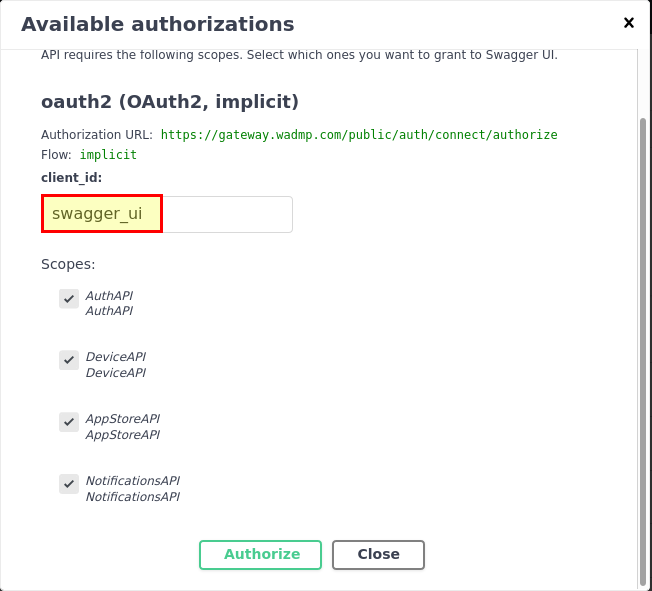

WebAccess/DMP
Description: All notes or information on using WebAccess/DMP (WA/DMP).
Login Information - API
-
Make sure you are logged into your account.
-
Click on API Gallery.
-
Select SWH API.
-
Click on the Authorize button.
-

-
In the client_id field, please enter swagger_ui.
-
Please be sure to check the box for the following fields: AuthAPI, DeviceAPI, AppStoreAPI and NotificationsAPI.
-
Lastly, please click the Authorize button.